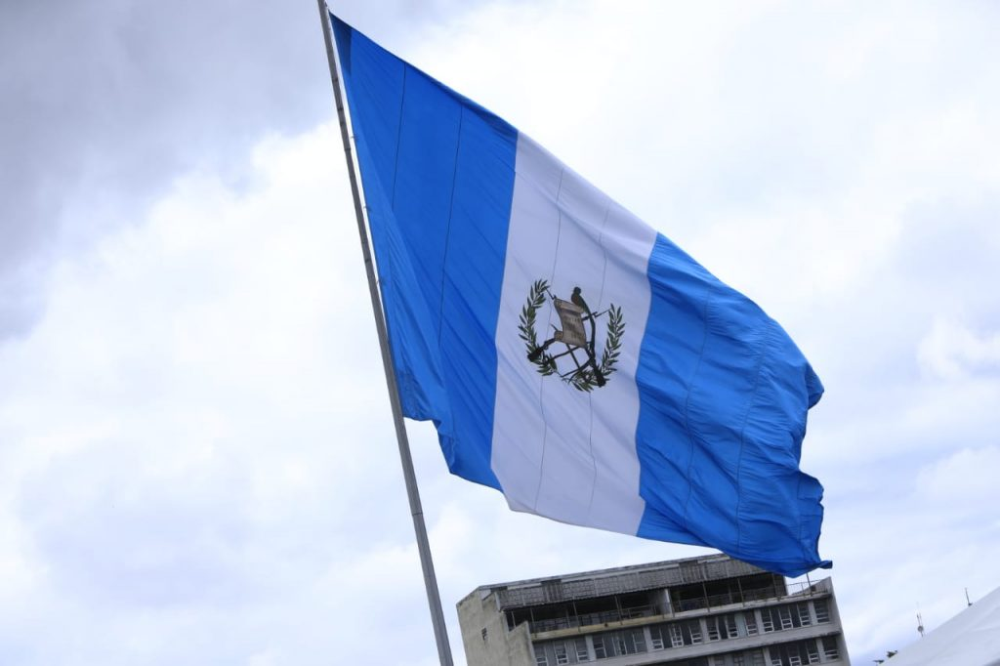
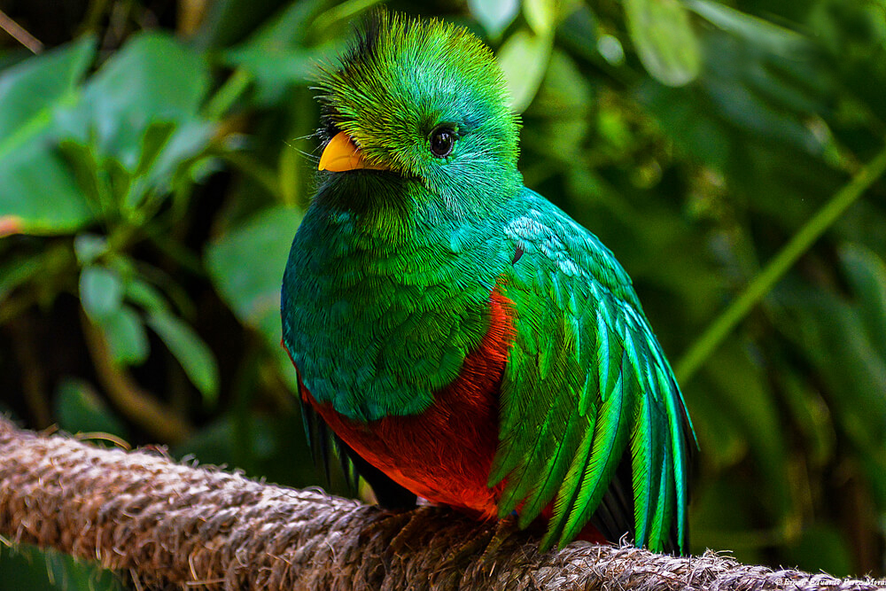

Simbolos patrios
Bandera Nacional
La primera bandera que ondeó Guatemala y que identificó al país fue en 1851, estaba compuesta por franjas horizontales de color azul, blanco, amarillo y rojo. Se convirtió en la insignia suprema del Estado.
En agosto de 1871, durante el mandato del presidente Miguel García Granados y tras dos décadas de usar una bandera de cuatro franjas, se estableció que los colores serían blanco y azul.
Después, en el gobierno de Julio César Méndez Montenegro, se promulgó el acuerdo gubernativo que instauró la bandera oficial del país centroamericano.

El Quetzal, Ave Nacional
El quetzal es un ave nativa de la región mesoamericana que representa las más altas dignidades religiosas de los ancestros guatemaltecos. Constituye el espíritu o nahual del valiente guerrero quiché Tecún Umán, quien se opuso a la invasión de los españoles. Se le declaró ave nacional según Decreto 33 del 18 de noviembre de 1871.
El quetzal, conocido como pájaro serpiente en los libros sagrados de los mayas, es el símbolo de la libertad y la independencia. Aparece en el escudo de armas y da nombre a la moneda nacional. Los ornitólogos colocan al quetzal entre las seis aves más hermosas del Nuevo Mundo, según el Ministerio de Cultura y Deportes.

La Ceiba,Arbol Nacional
La ceiba es considerada el árbol sagrado de la vida, donde los mayas, desde los tiempos precolombinos, acostumbraban celebrar sus ritos.
Representa la sabiduría. En sus leyendas cosmogónicas abre sus ramas mayores hacia los cuatro puntos cardinales y de esa manera se une a la cuádruple deidad que rige los vientos y las lluvias.
Sus ramas dividen el mundo inferior, donde moran los espíritus del Xibalbá o lugar de la extinción, además de marcar los rumbos en el mundo físico y dividir las estancias de los dioses en el alto misterio cósmico.

Historia
Primeras civilizaciones
Guatemala está situada dentro del área geográfica conocida como Mesoamérica.
Dentro de sus límites territoriales se desarrollaron varias culturas.
Es cuna de la Civilización Maya que fue notable por lograr un complejo desarrollo social.
Los Mayas.
Sobresalió en varias disciplinas científicas tales como la arquitectura, la escritura, un avanzado cálculo del tiempo por medio de las matemáticas y la astronomía, el calendario maya es más preciso que el calendario gregoriano que utilizamos hoy en día.
Eran cazadores, agricultores, practicaban la pesca, domesticaban animales como pavos y patos; se trasportaban en canoas para navegar por los ríos y para viajar a las islas cercanas.
También destacaron en la pintura, la escultura, la orfebrería y la metalurgia del cobre, tejían el algodón y la fibra de ágave, desarrollaron el más completo sistema de escritura en América prehispánica,
también eran deportistas, entre los deportes que practicaban se destaca el juego de pelota.
Su desarrollo en ingeniería fue monumental, construyeron grandes metrópolis desde el período Pre Clásico.
A la llegada de los españoles a su territorio, en 1524, los mayas del período clásico (alrededor del año 800) habían dejado de ser una civilización compleja y organizada.
Sus descendientes (provenientes de Tula) se encontraban divididos en un buen número de señoríos y/o ciudades-estado.
Hoy en día a Guatemala se le conoce como el corazón del Mundo Maya, donde más de cuatro millones de descendientes mayas continúan hablando maya y con sus costumbres en sus tierras originarias, viven libremente,
practicando la agricultura, la ganadería y la pesca, de ellos aproximadamente 2 millones viven en Guatemala.
Extensión Territorial
Guatemala cuenta con una gran variedad climática y biológica producto de su relieve montañoso que va desde los 0 metros sobre el nivel del mar hasta los 4,220 metros sobre el nivel del mar, esto propicia que en el país existan ecosistemas tan variados que van desde los manglares de los humedales del pacífico hasta los bosques nublados de alta montaña.
Limita al oeste y norte con México, al este con Belice y el Golfo de Honduras, al sureste con Honduras y El Salvador, y al sur con el Océano Pacífico.
El país tiene 108.889 km² (la República de Guatemala mantiene un diferendo territorial con Belice, por 12.000 km²)
Lista de Departamentos
Departamentos
1 Alta Verapaz
2 Baja Verapaz
3 Chimaltenango
4 Chiquimula
5 Petén (Guatemala)
6 El Progreso (Guatemala)
7 Quiché
8 Escuintla
9 Guatemala
10 Huehuetenango
11 Izabal
12 Jalapa
13 Jutiapa
14 Quetzaltenango
15 Retalhuleu
16 Sacatepéquez
17 San Marcos (Guatemala)
18 Santa Rosa (Guatemala)
19 Sololá
20 Suchitepéquez
21 Totonicapán
22 Zacapa